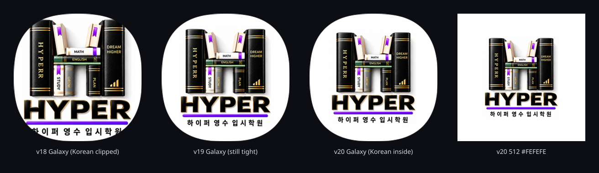
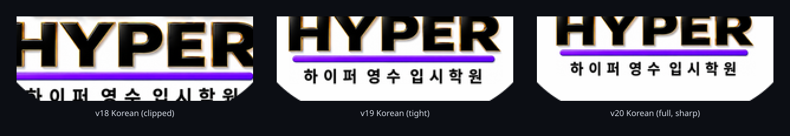

48dp v19 48dp v20
48dp v19 48dp v20 Canvas stays RGB(254,254,254). Mark is the v18 source, uniformly scaled so 하이퍼 영수 입시학원 sits fully inside the measured One UI n=2.6 mask with a 36px gutter (about 12px on a real Galaxy tile).


48dp v18 48dp v19 48dp v20